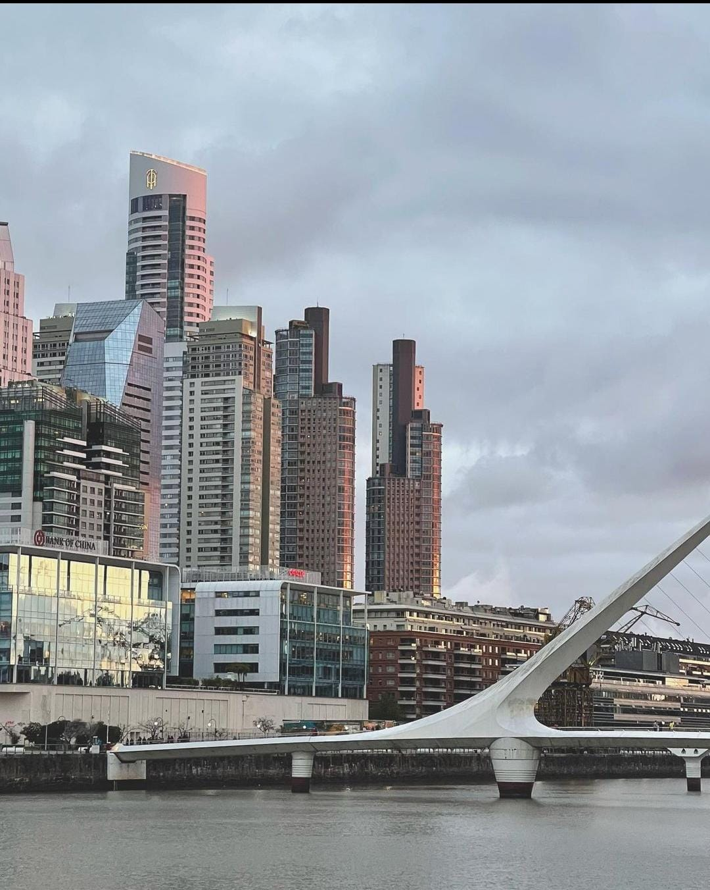
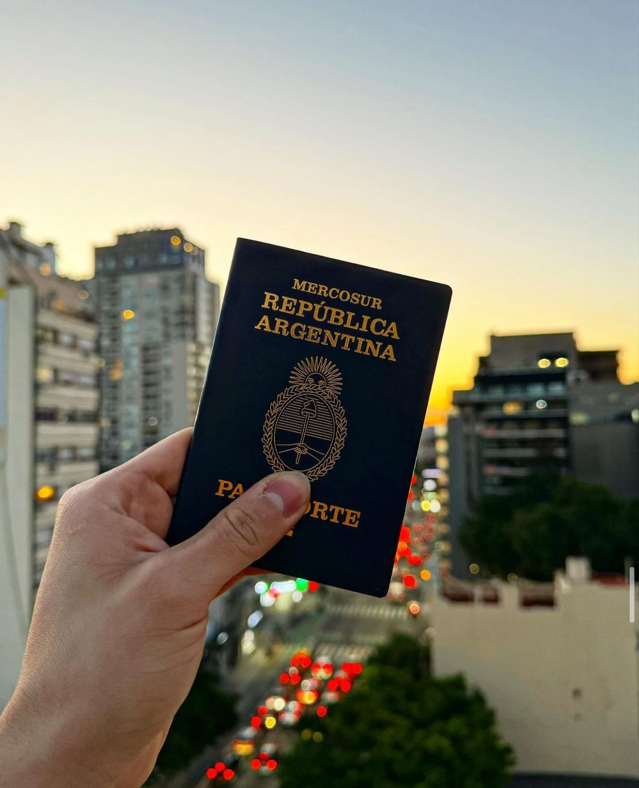
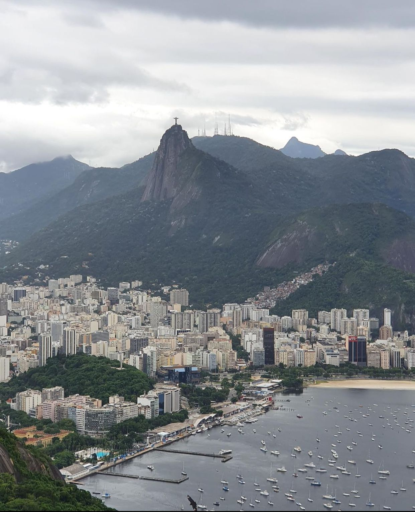

ESCAPADAS.AR
Proposito
Vivir en Argentina es un regalo del universo, y mi pasión por explorar y descubrir nuevos lugares me inspira a compartir esa maravillosa experiencia a través de escapadas.ar. Mi objetivo es mostrar a más personas que viajar y sumergirse en nuevas vivencias no tiene por qué ser una tarea tediosa.
A través de escapadas.ar, no solo quiero destacar la belleza diversa de Argentina, desde sus ciudades hasta sus paisajes naturales, sino también resaltar la rica cultura y tradiciones locales. Quiero ofrecer más que solo destinos; quiero proporcionar consejos prácticos que faciliten los viajes, desde sugerencias de embalaje hasta información sobre transporte local y formas de ahorrar dinero.
A medida que la comunidad de escapadas.ar crece, mi aspiración es agregar cada vez más países, continentes y regiones a esta colección de experiencias. Quiero que cada seguidor se sumerja en la aventura, se conecte con la naturaleza y descubra la grandeza que ofrece cada rincón del mundo.
